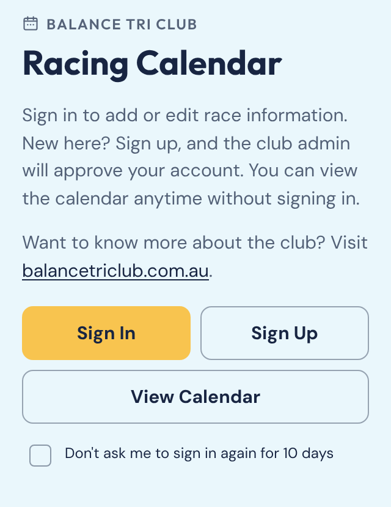
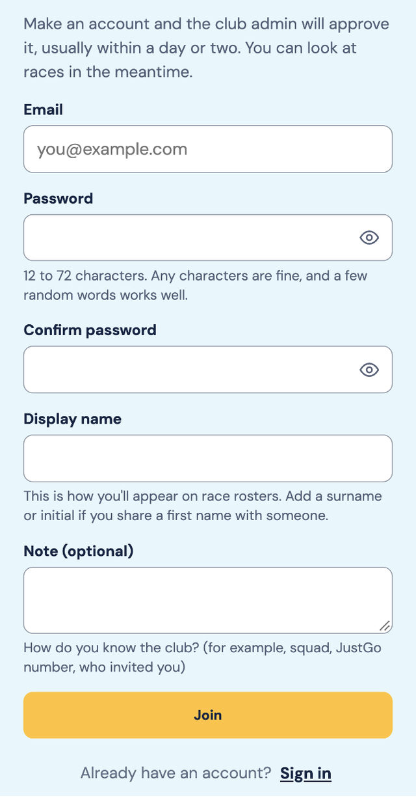
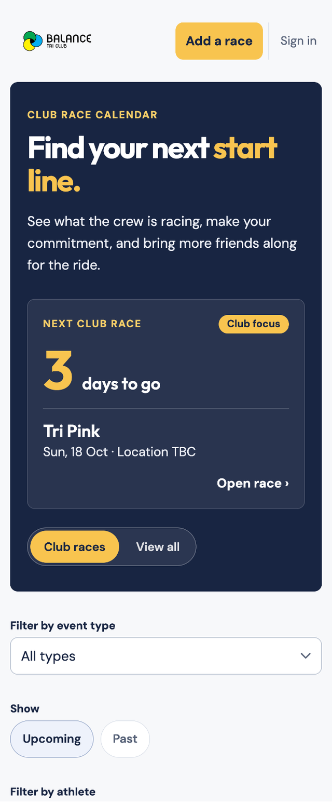
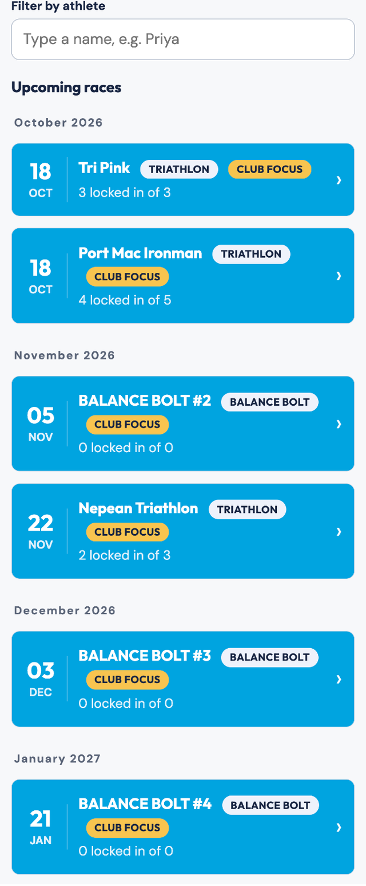
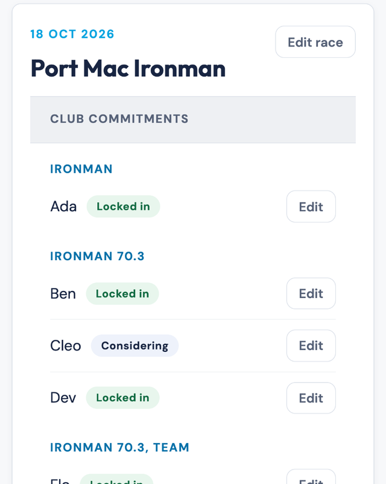
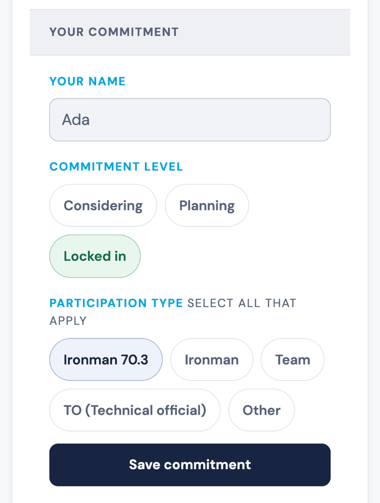
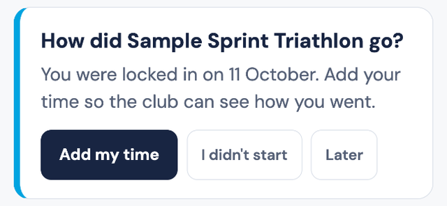
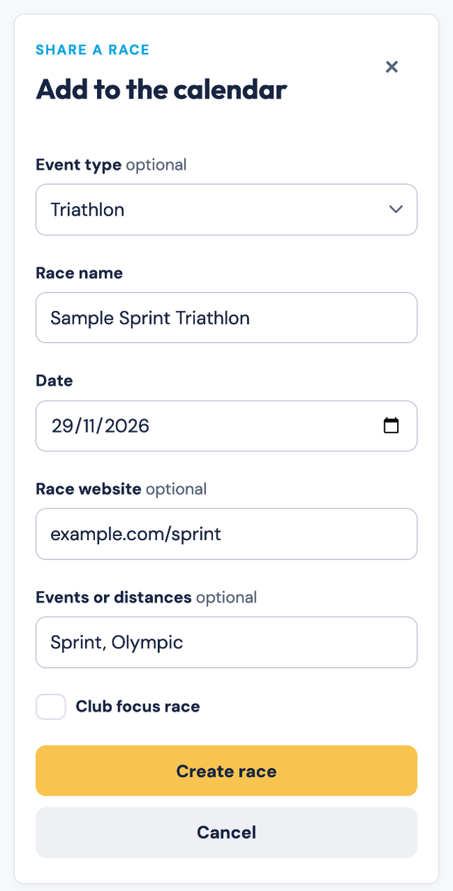

HOW-TO GUIDE
Find your race. Lock it in.
How to join the club, share your race plans, add your results, and keep the calendar up to date.
The Balance Tri Club race calendar shows what the crew is racing. You say which races you are in. Everyone sees who will be on the start line. After the race, you add your time.
This guide has two parts:
- Part 1: Racers is for every club member.
- Part 2: Running the calendar is for anyone who adds races, and for the club admin.
| Page | Address | Who uses it |
|---|---|---|
| Race calendar | https://jthoyer.github.io/BalanceTRI-app/ |
Everyone. You can look without an account. |
| Race page |
https://jthoyer.github.io/BalanceTRI-app/race/ plus the race name
|
Anyone with the link. Every race has its own address. |
| Balance Bolt sign-up | https://jthoyer.github.io/BalanceBolt/ |
Racers in a Balance Bolt race. It has its own guide. |
The screenshots use made-up names and a practice race.
Part 1: Racers
You need about a minute. A club admin approves new accounts, so join a few days before you need to add anything.
1. Open the calendar
Open the calendar address on your phone or laptop. A welcome screen offers three buttons: Sign In, Join and View Calendar.
Just looking? Tap View Calendar. You can browse every race and see who is racing. You do not need an account for that.

Tick Don't ask me to sign in again for 10 days if you do not want the prompt every visit.
2. Join the club
You need an account to share your plans. Tap Join and fill in the form.
- Email. Use the one you check.
- Password. Use 12 to 72 characters. Any characters work. A few random words make a good password. The app turns down very common ones.
- Confirm password. Type it again.
- Display name. This is how you appear on race rosters. Use 2 to 40 characters: letters, spaces, apostrophes, hyphens and full stops. Share a first name with someone? Add a surname or initial.
- Note. Optional. Say how you know the club. Your squad, your JustGo number or who invited you all help.

Tap Join. The club admin then approves your account. This usually takes a day or two. The app sends no email, so check back and sign in. You can look at races while you wait. Names on race pages show once you are approved.
Already have an account? Tap Sign in at the top right and enter your email and password.
Once you are in, the top right shows Add a race and Menu. Tap Menu for the guide, Change password and Sign out. Your name sits at the top of the menu. Not signed in? The guide link is at the bottom of the calendar on a phone.
Forgot your password? Ask the club admin to reset it. Email mail@balancetriclub.com. A temporary password runs out. If yours has, ask for a new one.
3. Find a race
The top of the calendar shows the next club race and a countdown. Tap Open race to go straight to it.

Narrow the list with these controls:
- Club races or View all. Club races shows the races the club is backing. View all shows every race on the calendar.
- Filter by event type. Pick Balance Bolt, Bike, Multi-sport, Run, Swim or Triathlon.
- Upcoming or Past. Past races stay on the calendar after their date.
- Filter by athlete. Type a name to see the races that person is in. Members only: it shows once your account is approved.
Each race row shows the date, the name, a badge for the type and a gold Club focus badge. It also shows a count such as 3 locked in of 5. That means five people have made a commitment, and three of them are locked in. Past races show how many raced and how many results are in.

Nothing showing? The page tells you which filters are on. Clear the name search, choose All types, or tap View all.
4. Read a race page
Tap any race to open it. You see the date, the race name and a link to the race website, if someone added one. Below that, Club commitments lists everyone who has made a plan. Names sit in groups by event or distance.
Names are for members. If you are not signed in, or the club has not approved your account yet, you see the race and its counts, such as 5 members going · 3 locked in. You do not see who. This keeps members' names off the open web.

Each name has a tag that says how sure that person is.
| Tag | What it means |
|---|---|
| Considering | They are thinking about it. |
| Planning | They are working towards it. |
| Locked in | They are racing. |
Want to share a race? Copy the address from your browser. It opens that race for anyone you send it to.
5. Make your commitment
Sign in first. Then open the race and tap Add your commitment.
- Your name. This shows your display name. You cannot change it here. Ask the club admin if it needs fixing.
- Commitment level. Pick Considering, Planning or Locked in.
- Participation type. Pick every option that applies. The choices come from the race's events and distances. Team and TO (Technical official) are always there. Tap Other to type your own event or distance.
- Tap Save commitment.

Your name shows up on the roster straight away.
Change or remove your commitment
Tap Edit on your own row. Change your level or events, then tap Save commitment. To leave a race, tap Remove commitment and confirm.
Set your level to Locked in once you are racing. The result reminder in the next step looks for it.
6. Add your result
Results open on race day, by Sydney time. Once they open, an approved member sees Club results where Club commitments used to be.
For 14 days after a race, a reminder card appears at the top of the calendar if you were locked in and have no result yet.

- Add my time. Opens the result form.
- I didn't start. Saves a DNS for that race. You can change it later from the race page.
- Later. Hides the card on this device only.
You can also add a result from the race page. Fill in the form:
- How did it go? Pick Finished, DNF or DNS.
-
Finish time. Type hours, minutes and seconds, like
1:23:45. Under an hour, type45:30. - Overall place and Age-group place. Add them if you know them.
- Personal best. Tick the box if you set one.
- Note. Optional. You get 280 characters.
- Tap Save result.
| Status | Use it when |
|---|---|
| Finished | You crossed the line. Add your time. |
| DNF | You started but did not finish. |
| DNS | You did not start. |
Later, use Edit result to fix a mistake or Remove result to take it back.
The results list puts the fastest finishers first. DNFs come next, then DNSs, then members with no result yet. Places and personal bests show beside each name. Only you or a club admin can save or remove your result.
7. Balance Bolt races
Balance Bolt is the club's prediction race. Its sign-up and results live on their own site, so this calendar does not take results for it.
Open a Balance Bolt race on the calendar. The Race website section shows the Bolt sign-up page in full. Read the Balance Bolt guide for the full steps.
If something goes wrong
The app tells you what to fix. These are the messages you may see.
| You see | What it means | What to do |
|---|---|---|
| "That email and password don't match. Check them and try again." | One of them is wrong. | Check your typing. Still stuck? Ask the club admin for a reset. |
| "Too many tries just now. Wait a few minutes, then try again." | The app paused sign-in. | Wait a few minutes. |
| "That password is too common. Try a few random words instead." | Many people use that password. | Pick a few random words. |
| "Your name needs to be 2 to 40 characters." | Your display name is too short or too long. | Change it to fit. |
| "Use letters, spaces, apostrophes, hyphens and full stops in your name." | Your display name has a character the app does not allow. | Remove numbers and symbols. |
| "You're signed in, but you can't add or edit races yet. Ask to join, and the club admin will approve you." | Your account is waiting for approval. | Wait a day or two. Check back. |
| "Your account wasn't approved." or "Your access has been removed." | The club admin has closed the account. | Contact the club admin. |
| "[Your name] is already on this race. If that's you, use their 'Edit' link on the roster instead of adding a new entry." | That name has a commitment already. | Tap Edit on your row. Share a first name? Ask the admin to change your display name. |
| "That result is not valid. Check the time and the places." | The app could not read the time or a place. | Type the time like 1:23:45. Check your places too. |
| "Only the member on this entry, or a club admin, can save a result here. Results open on race day." | The race has not happened yet, or the entry is not yours. | Wait for race day, or ask the club admin. |
| "That race link no longer works — showing the race list instead." | Someone removed the race, or the link is wrong. | Find the race in the list. |
| "The calendar could not load. Check your connection and try refreshing." | The app could not reach its data. | Check your signal. Then reload the page. |
Part 2: Running the calendar
Any approved member can add and edit races. The club admin looks after accounts.
Add a race
Tap Add a race at the top right. Sign in if the app asks.

| Field | What to put in it |
|---|---|
| Event type | Optional. Pick Balance Bolt, Bike, Multi-sport, Run, Swim or Triathlon. The race filter uses this. |
| Race name | The name racers will look for, such as Melbourne Marathon. |
| Date | The race day. |
| Race website |
Optional. A link such as ironman.com/melbourne. It shows on the
race page.
|
| Events or distances | Optional. Separate them with commas, like 70.3, Olympic, Sprint. These become the choices racers pick from. |
| Club focus race | Tick it if the club is backing this race. It gets a gold badge and shows under Club races. |
Tap Create race. The race lands in its month on the calendar.
Adding a Balance Bolt race? Put the race number in the name, such as
BALANCE BOLT #3. Keep it as the only number in the name. The calendar uses that number to open the right Bolt sign-up.
Edit or remove a race
- Open the race.
- Tap Edit race.
- Change what you need, then tap Save changes.
The same screen has Remove race. The app asks you to confirm. Check first. People may have made commitments to that race.
What the club admin does
- Approves new accounts. Most take a day or two. Admins find the console under Menu, then Admin. A yellow dot on Menu means requests are waiting.
- Resets passwords when members ask.
- Changes a member's display name when it needs fixing.
- Saves or corrects a result for another member.
Send feedback
Spot a bug or have an idea? Tap Send feedback at the bottom of the calendar. Write up to 2,000 characters. Add a name or email only if you want a reply. Every message gets read.
Quick checklist
For racers
- Account approved, and you can sign in.
- Display name tells teammates who you are.
- A commitment saved for each race, at the right level.
- Level set to Locked in once you are racing.
- Result added within 14 days of the race.
For anyone adding a race
- Name and date are right.
- Distances added, so racers can pick them.
- Club focus ticked if the club is going.
- Balance Bolt race number in the name, if it is a Bolt race.